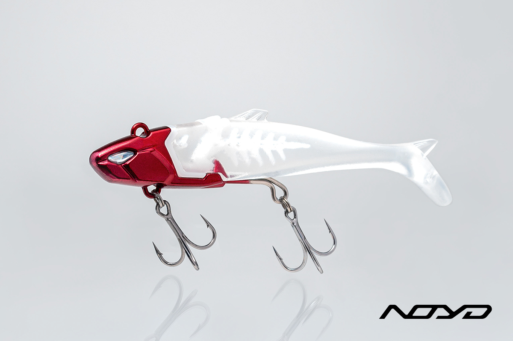
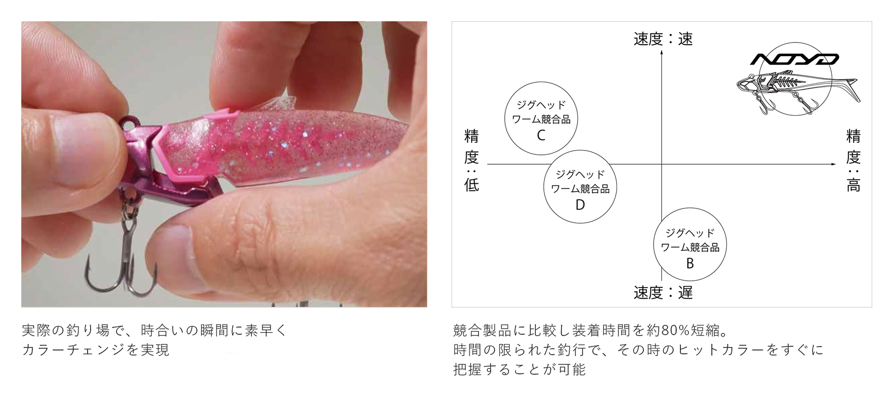
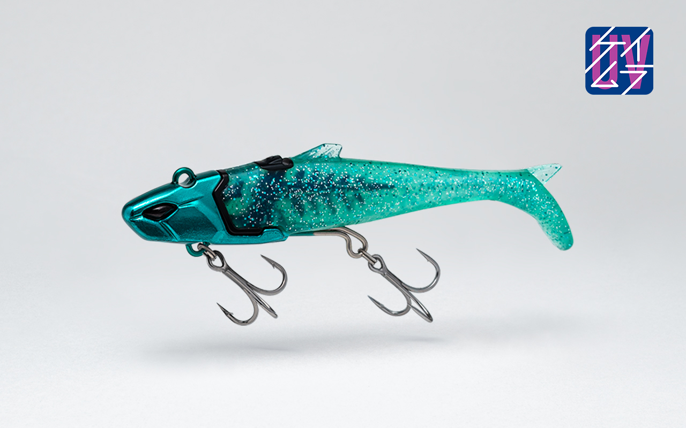
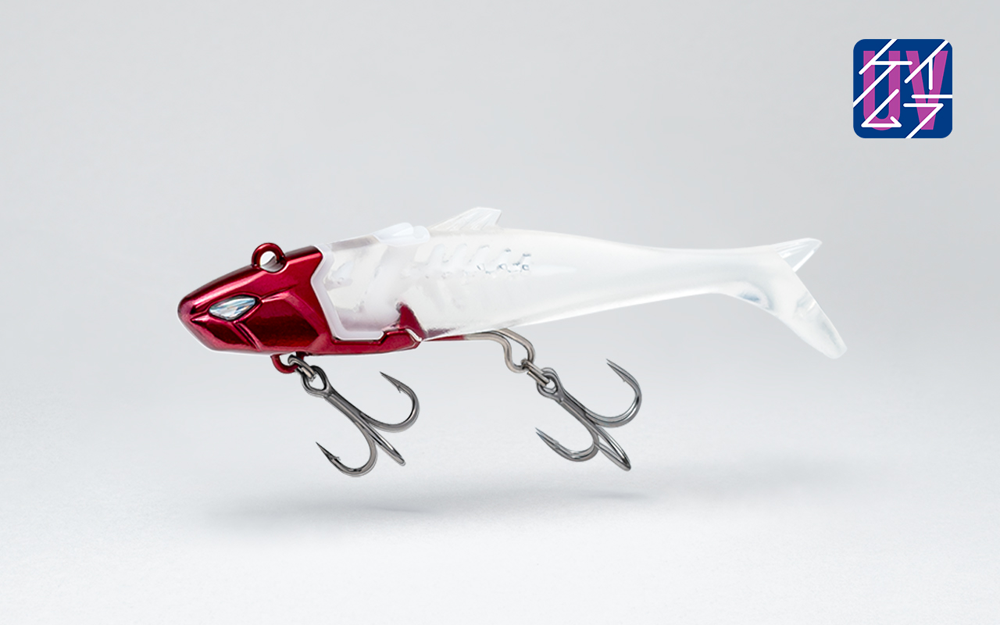
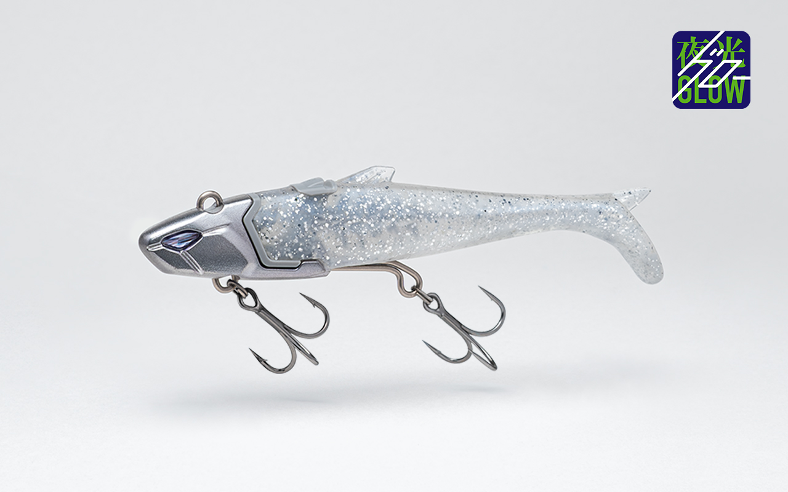
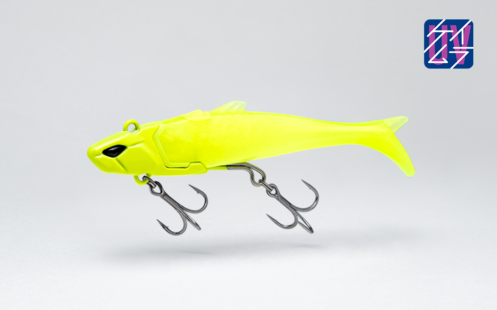

ノイド
（NOYD）
ノイド（NOYD）はFLOWFUL WORKS（フローフルワークス）のジグヘッドワームです。
一番の魅力は、ワームがずれず、誰でも一瞬で完璧にセットできること。ジグヘッドワームは、ワームが少しずれるだけで泳がなくなり、釣れない原因になります。ノイドなら、ワームを真っすぐ刺すストレスから解放されるので、初心者にもおすすめの1本です。

画像出典:FLOWFUL WORKS公式HP
スペック
- メーカー
- FLOWFUL WORKS（フローフルワークス）
- タイプ
- ジグヘッドワーム
- サイズ
- 105mm（16g・21g）／110mm（30g・40g）
- 重さ
- 16g／21g／30g／40g
- フック
- BKK SPEAR #10（16g）／#8（21g）／#6（30g・40g）
- カラー
- 全9色（16g・21g）／全8色（30g・40g）
- 付属
- 予備ワーム1本（16g・21g）
- ターゲット
- シーバス・青物・ヒラメ・マゴチ・タチウオなど
- 価格
- 1,991円（16g・21g）／1,760円（30g）／1,870円（40g）（税込）
▼今すぐチェック

ノイドの特徴
ワームのズレと装着のストレスを解消した、次世代のジグヘッドワーム
-
ワームがずれない「骨」構造とクイックジョイント
特許出願中の「ホーン着脱構造」で、ワームを骨にはめ込むだけで誰でも一瞬で完璧にセットできる。公式によると、装着時間は競合製品より約80％短縮。ワームを真っすぐ刺す練習がいらないので、初心者でも最初から正しい姿勢で泳がせられる。
-
どんな潮流でも水平姿勢を保つ
ワーム形状とジグヘッドの重心バランスを、水平姿勢のために調整。潮を面で捉える断面形状で引き抵抗を軽くしながら、どんな巻き速度や潮流でも水平に泳ぐ。前後のフックが同時に掛かりやすく、バラシも防げる。
-
不意の動きで食わせる千鳥アクション
トゥイッチなどの揺らぎを加えると、独自の断面形状が不規則な波動を生み、千鳥アクションが出る。単調な動きを見飽きたシーバスの捕食スイッチを入れられる。

画像出典:FLOWFUL WORKS公式HP
ノイドの使い方
基本はただ巻きです。キャストして狙うレンジまで沈め、一定の速さで巻くだけで、水平姿勢のまま泳いでくれます。
反応がない時は、巻いている途中に小さなトゥイッチを入れて千鳥アクションを出すと、不意の動きで口を使わせられます。カラーは一瞬で付け替えられるので、釣り場でも気軽に試しましょう。
ノイドの得意な状況
ジグヘッドワームを使ってみたいけれど、ワームをまっすぐ刺すのが苦手な人に最適です。
ワームがずれると泳ぎが乱れ、魚に見切られる原因になります。ノイドならその心配が少ないので、釣りそのものに集中できます。
時合いの短い場面でもすぐカラーを変えられるので、当たりカラーを早く見つけて釣れるチャンスを逃しにくいのも強みです。
ワンポイント
カラーに迷ったら、公式が必釣カラーとするケイムラグリーンから始めるのがおすすめです。ボディは交換できるので、予備ワームも持っておくと安心です。
ノイドのサイズの使い分け
| モデル | 全長／フック | 特徴 |
|---|---|---|
| 16g | 105mm／#10 | 軽めで扱いやすい。港湾や浅いエリアに |
| 21g | 105mm／#8 | 飛距離と扱いやすさのバランスが良い基本の重さ |
| 30g | 110mm／#6 | 遠投や深いレンジ、流れの強い場所に |
| 40g | 110mm／#6 | より遠くや深い場所を狙いたい時に |
どの重さでも、ワームの付け替えのしやすさは同じです。最初の1個は、釣り場の水深と飛距離に合わせて16gか21gから選びましょう。スペアワームも別売りされています。
人気カラー
ノイドの人気カラーを紹介します。

ケイムラグリーン公式がエースカラーとする1色。デイゲームのスレたシーバスに強く、水質を問わず使える。

レッドヘッド青物やシーバスに安定した釣果を出す万能カラー。マイクロベイトパターンにも対応。

シルバーグローチップ入りでナイトゲームに頼れるカラー。朝夕のマズメにも。

イエローチャート濁りやナイトゲームで見やすいカラー。コノシロやボラのパターンに。
画像出典:FLOWFUL WORKS公式HP
▼今すぐチェック
ノイドに似ているルアー
-
 VJ-16
コアマン
詳細はこちら＞
VJ-16
コアマン
詳細はこちら＞
シーバスワームの定番、バイブレーションジグヘッド。ジグヘッドにワームを刺すタイプで、巻くだけで強い波動を出せる。
-
 ジョルティ
ブルーブルー
詳細はこちら＞
ジョルティ
ブルーブルー
詳細はこちら＞
15g・22g・30gのジグヘッドワーム。同じ巻きの釣りで、シーバスを広く探れる定番。
-
 ローリングジグヘッド RJ-10
コアマン
詳細はこちら＞
ローリングジグヘッド RJ-10
コアマン
詳細はこちら＞
ジグヘッドとソフトルアーのセット。軽めのジグヘッドで、スローに誘いたい時の候補。